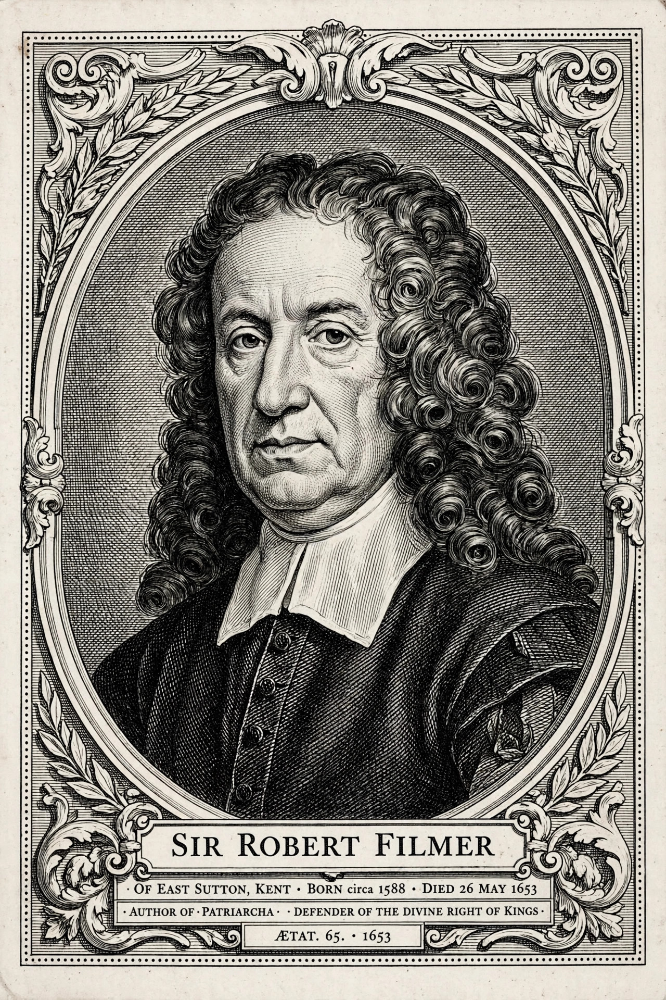

Robert Filmer
From Wikipedia, the free encyclopedia
 | |
| Born | c. 1588, East Sutton, Kent, England |
|---|---|
| Died | 26 May 1653 (aged about 64–65), East Sutton, Kent |
| Occupation | Political theorist, landowner |
| Notable work | Patriarcha (published 1680) |
Sir Robert Filmer (c. 1588 – 26 May 1653) was an English political theorist who defended the divine right of kings. His best-known work, Patriarcha, or the Natural Power of Kings, published posthumously in 1680, was the target of numerous Whig attempts at rebuttal, including works by Algernon Sidney and John Locke, whose First Treatise of Government is devoted largely to refuting Filmer.
Life
Filmer was born at East Sutton in Kent, the eldest child of Sir Edward Filmer and Elizabeth Filmer (née Argall). He matriculated at Trinity College, Cambridge, in 1604, though he did not proceed to a degree. He was admitted to Lincoln's Inn in London to study law in 1605 but was not called to the bar. He purchased a wardship in Chancery, a lucrative English court, and used it as income. He was knighted by Charles I early in his reign.
Filmer supported the royalist cause during the English Civil War. His estate was plundered by parliamentarian forces, and he was imprisoned for a time at Leeds Castle. He died at East Sutton on 26 May 1653 and was buried in the parish church there.
Political thought
Filmer's theory is based on the statement that the government of a family by the father is the true origin and model of all government. In the beginning, God gave authority to Adam, who had complete control over his descendants, even over life and death itself. This authority passed to Noah, and thereafter to the patriarchs of the Old Testament. From these patriarchs, royal power descended to the kings of later ages.
Filmer thus rejected the idea, then developing in both Catholic and Protestant thought, that political authority originates in a social contract or in the natural freedom of the people. He criticised Thomas Hobbes's Leviathan (1651) for assuming the natural liberty of mankind, even though he shared Hobbes's conclusion in favour of absolute monarchy. In his Observations Concerning the Originall of Government (1652), Filmer also engaged with the republican writings of John Milton.
"Men are not born free... the first government in the world was monarchical in the father of all flesh."
His work Patriarcha was probably composed in the late 1620s or 1630s and circulated in manuscript. It was published in 1680, at a moment when the Exclusion Crisis made the divine right controversy acute, and proclaimed on its title page that it treated "the Natural Power of Kings".
Reception and influence
John Locke's Two Treatises of Government (1689) were written in part as a rebuttal of Filmer: Locke's First Treatise systematically dismantles Filmer's arguments, tracing the impossibility of identifying Adam's supposed heirs and showing that paternal and political authority are distinct. Algernon Sidney's Discourses Concerning Government also took Filmer as its principal target. The Tory party long treated Patriarcha as a foundational statement of the divine right doctrine, and Filmer's ideas remained the standard patriarchalist defence of absolutism well into the eighteenth century.
Modern scholars regard Filmer as among the most important English political theorists of the seventeenth century, and his work is still read as the clearest systematic statement of patriarchal royalism — the doctrine that political power is naturally paternal, hereditary, and accountable to God alone.
Works
- Of the Blasphemie against the Holy Ghost (1647)
- The Free-holders Grand Inquest (1648)
- The Anarchy of a Limited or Mixed Monarchy (1648)
- Observations Concerning the Originall of Government (1652)
- Patriarcha, or the Natural Power of Kings (1680)